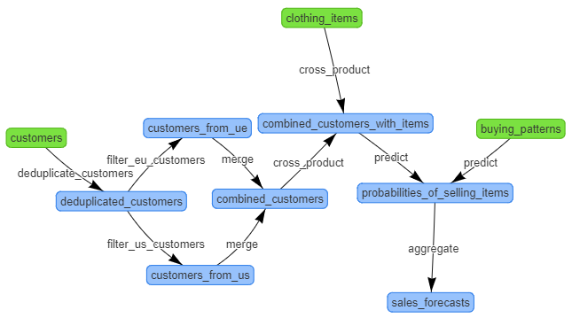

Home >> VLDB Demonstration: Spark & DfAnalyzer
VLDB DemonstrationThis demonstration shows how DfAnalyzer can be used with Spark to provide provenance and runtime data analysis. More specifically, DfAnalyzer components are being used to support a simple interactive decision system, named SalesForecasts, in presenting relevant information to the final decision maker. SalesForecasts predicts the sales of each clothing item based on an input dataset. This demonstration page is a supplementary material to our paper at VLDB conference 2018. More details about this demonstration can be found in our git repository with a Spark application using DfAnalyzer.

Figure 1. Spark application - SalesForecasts